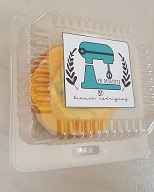
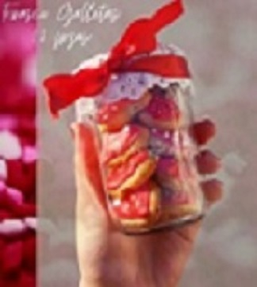

Productos

Pasteles
Galletas
Articulos para tu fiesta
Cup Cackes
Consejos para controlar el insumo de postres
Decide con tiempo qué comerás y cuándo,.
Comparte una porción de postre con alguien más.
Algunas ideas son hacer galletas, manzanas horneadas, o pudín sin azúcar.

Certificaciones
Somos una empresa certificada, la cual todos contamos con nuestro tituolo en respoteria.